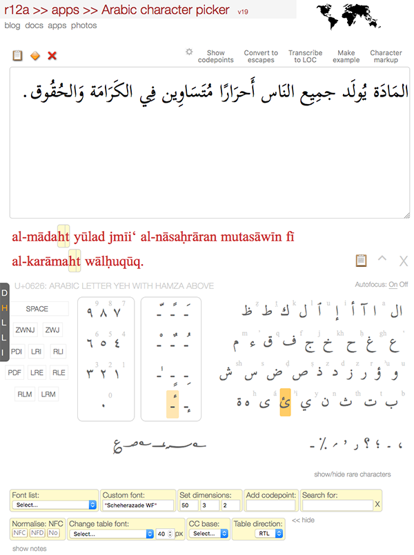

Select the thing you want help with:

Text area
This is where you see characters appearing as you select them from the panels lower down or where you paste text into the picker. Once you have some text here, you can perform various operations on it, or simply copy it to the clipboard for use elsewhere.
The controls just above the text area allow you to interactive with the text in various ways. They mostly work on highlighted text within the text area, or if there is no highlight they work on all the text. Controls near the bottom of the picker allow you to change font, font size, line-height, text direction, etc.
Controls above the text area
Controls above the input box allow you to run various operations on the text in the box. Most of them work on what you have selected within the box, or the whole box if nothing is selected.
Copy, select, delete ( ). The icons on the left above the input box allow you to copy the text to the clipboard, select the text or delete the text, respectively.
). The icons on the left above the input box allow you to copy the text to the clipboard, select the text or delete the text, respectively.
Show codepoints. Produces a list of the Unicode code points in the input box. You can usually follow a link from a code point item to more detailed information about that character.
Convert to escapes. Opens a new window for the converter app, which shows various different ways of representing the text in the input box using escapes.
Transcribe to LOC. This produces a Library of Congress transcription of the text in the box. The transcription appears just below the input box, where you can copy it, move it into the input box at the caret, or delete it. The transcription is generated using rules.
Make example. This may be useful to speed up the creation of examples. You can create an example with four parts, delimited by /, in the following order: [1] Arabic text, [2] IPA transcription, [3] other transcription, [4] meaning. You don't need to add all four elements, but if you want to skip one in the middle of the sequence, use //.
For example, the following (which is displayed here more as you'd type it than see it):
العربي/alʕarabiː/alarabī/Arabic
will produce:
<span class="ex" lang="ar" dir="rtl">العربي</span> <span class="ipa">alʕarabiː</span> <span class="trans">alʻarabī</span> <span class="meaning">Arabic</span>
To get just the arabic and the second transcription you would use:
العربي//alarabī
Character markup. This may be useful to speed up the creation of markup for a specific character or set of characters. Select one or more characters in the text area, then click this button. It will return something like the following for each of the characters:
<a href="/scripts/arabic/block#char0628"><span class="uname">U+064A ARABIC LETTER BEH</span> (<span lang="ar" dir="rtl">ب</span>)</a>
You can remove or alter the URL to suit your needs. When you add it to your document, it will look like this.
U+064A ARABIC LETTER YEH (ي)
Secondary text area
This area receives the output of various tools. Note that the text is editable.
The icons to the right ( ) allow you to copy the contents of this area to the clipboard, insert the contents into the main text area, or close this subwindow, respectively. When you insert the contents of this subwindow into the main text area, the text will overwrite any highlighted text, otherwise it will just be inserted at the current cursor position.
Some conversions produce ambiguous output. In this case, you will be offered two alternatives on a yellow background, eg.  presents you with the alternatives 'h' or 't'. Simply click on the alternative you want, and the picker will discard the rest.
presents you with the alternatives 'h' or 't'. Simply click on the alternative you want, and the picker will discard the rest.
Character names
As you mouse over characters in the selection areas of the picker, you will see the code point and character name appear here.
Autofocus
When working on an iPad or similar device, you should set this to Off. This prevents the keyboard popping up after you input every character.
The vertical grey bar to the left allows you to turn on/off a number of panels that can help create the text you want.
Default. Turns off all input aids and closes all panels.
Hinting. Changes the selection area so that, when you mouse over a character, characters that are similar in appearance, and may be easily confused, are automatically highlighted. This can be particularly useful for people who are not familiar with the script, to avoid confusing similar characters, or to find the right character when two or more look similar.
Since the picker characters are already largely ordered in groups of similar shapes, hints are only provided when there is a little distance between the similar characters. (This is also why there is no shape lookup for this picker.)
Latin characters. Displays a panel of lowercase Latin characters you are likely to need for transcription.
Latin to Arabic. Displays a panel that allows you to generate Arabic text from characters used for Arabic transcription in the Library of Congress scheme. Click on the transcription character and the appropriate Arabic character will be produced. Where there are multiple possible choices, these choices are presented in a small pop-up box; click on the choice you want in order to add it to the text area.
IPA transcriptions. Displays a panel that allows you to generate Arabic text from characters used for phonetic transcription of Arabic. (This may still need some work.).
Click on characters or buttons in this area to add them to the text area above.
Arabic characters are arranged so that similar shapes are close to each other, since this helps people unfamiliar with the script to find the right character. There are buttons to insert invisible bidi control characters to one side. There is also a section containing rarely used characters that is hidden by default.
Note that it is possible to flip the direction of the selection area by selecting more options > Table direction (near the bottom of the picker).
Controls on the yellow background
Left-hand controls. These controls at the bottom of the page allow you to modify fonts used, the font size, line height, and the height of the text area.
Add codepoint. You can add characters to the text area by typing codepoints and escapes in the Add codepoint field and hitting return. This will accept HTML numeric character references, javascript and other programming escapes, U+ Unicode notation, or just simple codepoint numbers separated by spaces. All codepoint numbers (including those in escapes) must be hexadecimal.
Search for. If you are searching for a particular character and know (at least part of) the name or the codepoint, type that in the search box and hit return. All characters with matching text in the name or codepoint number will be highlighted. The highlighting is only removed when you click on the X next to the search input field. You can also use regular expression syntax to improve your search results. For example, to find the letter 'ha', but not 'gha' etc, you can use \bha\b (or the shortcut, :ha:).
More controls
Click on more controls to reveal the less commonly used controls described here.
Normalise. All text is added to the main text area in Unicode normalisation form NFC by default. You can change to NFD or no normalisation by clicking on the buttons in the yellow area. Note that normalization only takes place when you click on a character – text pasted into the box won't be normalised until you click on another character above, or click on a button in the yellow area.
Change table font. Allows you to change the font and size of the characters you click on in the main selection areas.
CC base. You would normally expect combining characters, such as accents and vowel signs, when displayed alone to be associated with a dotted circle, however these font glyphs are handled inconsistently from one browser/font to the next. The picker is set up for a given web font initially, but if you change the table font you may need to do something to ensure that combining characters display in a way that helps you click on them.
The CC base control allows you to specify a base character that will be used before each combining character (or no base character). This should hopefully help for most font and browser combinations.
Output direction. Allows you to flip the direction of the selection area.